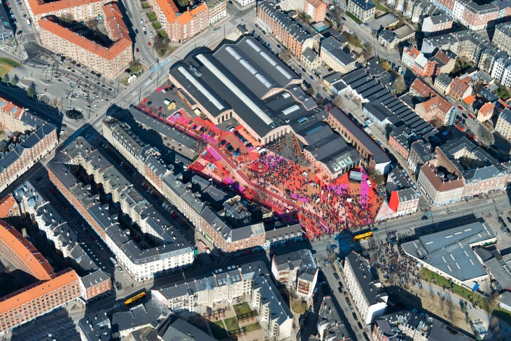
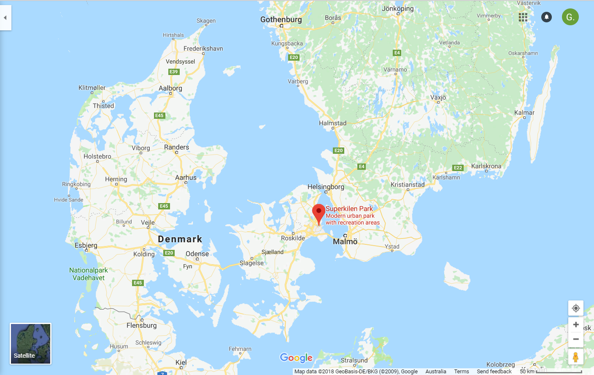

INTERNATIONAL CASE STUDY: SUPERKILEN PARK
Urban transformation is the city’s physical ability to adapt and transform according to the changing social dynamics and current demands within the city and the world.
Norrebro district is home to the Superkilen, a public park made up of three sections that stretches one kilometer long. This key move forced people to interact and with one another and their surrounding environment.
 Image source: https://www.kobenhavnergron.dk/place/superkilen/?lang=en
LOCATION
Nørrebro district in Copenhagen, Denmark
Image source: Google Maps

> Image source: https://edition.cnn.com/travel/article/copenhagen-surreal-park/index.html
TOTAL AREA
30,000m2
LAYOUT
Superkilen is a public park in an urban area. It is made up of 3 sections (the Red Square, the Black Market and the Green Park) that are all connected to each other in one long strip that stretches 1km long.

Image source: https://www.detail-online.com/article/three-colours-red-black-green-landscape-park-in-copenhagen-16511/#

Original image: INSERT_URL_HERE adapted on Adobe Illustrator
The Red Square:
Consists of bright red, orange and pink concrete floor. Used mainly for sport as the strip has basketball rings and is not car accessible.

Image source: https://realdania.dk/projekter/superkilen/nyheder/den-roede-plads-faar-ny-belaegning-i-2018_13062017

Image source: https://www.dezeen.com/2012/10/24/superkilen-park-by-big-topotek1-and-superflex/
The Black Market:
An area visually identifiable by the strips of white lines on the concrete strip. THis is a more relaxed area filled with a large fountain and a series of benches. It is an area where people can gather to have a bbq, play chess or meet up.

Image source: http://realdania.dk/projekter/superkilen#

Image source: http://realdania.dk/projekter/superkilen#

Image source: http://realdania.dk/projekter/superkilen#

Image source: http://realdania.dk/projekter/superkilen#

Image source: http://realdania.dk/projekter/superkilen#
The Green Park:
A traditional park filled with a lot of greenery and a playground.

Image source: http://realdania.dk/projekter/superkilen#

Image source: https://www.dezeen.com/2012/10/24/superkilen-park-by-big-topotek1-and-superflex/
Housing buildings are found along the strip where Superkilen is located, which can make these areas, along with their colours look separate. But like much of the inhabitants in the area, they are connected all together because they are physically in that 1km strip that is designed for only bicycles to enter.
KEY FEATURES
Superkilen is close to...
Nørrebro Station
Google predicts it is a 4 minute walk (300m)

Image source: Google Maps
Nørrebro Bibliotek library
Google predicts it is a 2 minute walk (150m)

Image source: Google Maps
Hillerødgade Bad and Hal (public swimming pool)
Google predicts it is a 5 minute walk (400m)

Image source: Google Maps
Nørrebroparken (playground)
Google predicts it is an 8 minute walk (650m). This connects to the well-known Assistens Cemetery which houses the Hans Christian Andersen's headstone

Image source: Google Maps
Nørrebroruten (the 'Green Path')
A popular bike path that runs through the centre of Nørrebro and briefly runs through Superkilen. The 'Green Park' is 10km long and is represented on the map as the thin green line. "It cuts through parks and residential blocks, school campuses and busy commercial hubs revealing a cross-section of Nørrebro"

Image source: Google Maps
DESIGN
Client:
Copenhagen Municipality
Commissioned by:
City of Copenhagen and Real Dania
Designed:
2009-2010 by Bjarke Ingels Group (BIG), Topotek 1 and Superflex
Complete:
2011
URBAN TRANSFORMATION APPROACH
Seen as an "extreme form of public participation" as the design was dependent on the idea that its inhabitants would be open to participate in using the park. The notion that the community would participate in these 3 spaces and socially integrate and build stronger relationships in the community. During the building of Superkilen the designers "reached out to the local population inviting them to propose urban elements from their other home countries. By transformating public process into a pro-active proposition they created a park for the people by the people with peer-to-peer design" (http://revolve.media/superkilen-implementing-urban-diversity/).
NØRREBRO DISTRICT
Population:
Nørrebro neighbourhood has "more than 60+ nationalities" (http://Revolve.Media/Superkilen-Implementing-Urban-Diversity/). Nørrebro is also heavily populated. In 2018 it has a population density of 19,652/km² (https://www.citypopulation.de/php/denmark-copenhagen.php?cityid=K03)
Economy:
Nørrebro district has a low economy compared with other districts in The Netherlands. The gap has been growing continuously overtime. A survey in 2005 conducted in Copenhagen showed that 3.9% of its inhabitants "have lived in poverty for 4 years or more (defined as long-term and permanent poor)" ((Elm Larsen, J. and Hornemann Möller, I.2013. 'The increasing socioeconomic and spatial segregation and polarization of living conditions in the Copenhagen metropolitan area'. DIVA.
ARGUMENTS & PEOPLE AGAINST 'SUPERKILEN'
The arguments against Superkilen park were mainly sparked by the increase in tourism this district would receive. Since the completion of Superkilen it has attracted many more tourists, and this has sparked people wanting to benefit off tourists. "Ghetto Tours" are tours in which some of the inhabitants show tourists around the area and their housing blocks. Despite the positive and the negative perspectives of these tours, it ultimately leads to gentrification of the district increasing prices for those who live there (more information at: https://www.citylab.com/equity/2016/06/slum-tourism-problematic-but-not-necessarily-in-the-way-you-might-think/487055/)
ARGUMENTS & PEOPLE FOR 'SUPERKILEN'
Since the completion of 'Superkilen' inhabitants say they feel 'safer' in the area. The incorporation of peoples country of origin have been a very beneficial process, that has strengthened the already multicultural area. It is also very important to refugees who have had to flee their home country and now live there.
'SUPERKILEN' - SUCCESS OR FAILURE
Superkilen was designed to encourage morale between a neighbourhood where there are many different ethnicities. The space was designed to engage community members to participate and interact with one another in the park. I believe Superkilen has done what it designed to do and I think getting public-involvement in the decision of what objects should symbolsie countries made the project alot more personal and effective.